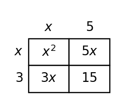
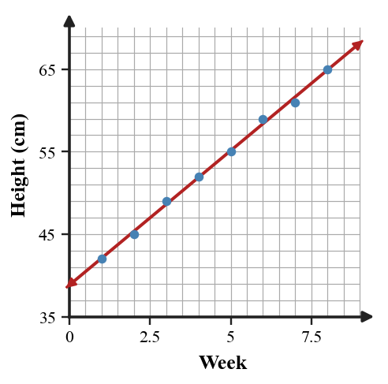

State whether $(x+3)(x+5)$ represents a sum or product before it is expanded.
State whether $(x+3)(x+5)$ represents a sum or product before it is expanded.
Solution: Before expansion, $(x+3)(x+5)$ represents a product because two binomial factors are being multiplied.
State whether $(2x^2+3x)-(x^2-4x+1)$ is a sum or difference.
State whether $(2x^2+3x)-(x^2-4x+1)$ is a sum or difference.
Solution: It represents a difference because the second polynomial is being subtracted from the first.
The algebra tiles show a polynomial expression. Write the expression and factor it if possible.

The algebra tiles show a polynomial expression. Write the expression and factor it if possible.
Solution: The tiles show one $x^2$ tile, five $x$ tiles, and six unit tiles, so the expression is $x^2+5x+6$. It factors as $(x+2)(x+3)$.
Compare the area-model representation and the symbolic expansion for $(x+3)(x+5)$. Explain how the four cells connect to the four products in the distributive method.

Compare the area-model representation and the symbolic expansion for $(x+3)(x+5)$. Explain how the four cells connect to the four products in the distributive method.
Solution: The four area-model cells represent each distributive product: $x\cdot x=x^2$, $x\cdot 5=5x$, $3\cdot x=3x$, and $3\cdot 5=15$. Adding the cells gives $x^2+5x+3x+15=x^2+8x+15$, which matches expanding $(x+3)(x+5)$.
A line has rate \$9 per ticket and a fixed fee of \$12. Identify the slope and intercept.
A line has rate \$9 per ticket and a fixed fee of \$12. Identify the slope and intercept.
Solution: The slope is $9$ dollars per ticket, and the intercept is the fixed fee, $12$ dollars.
Use the graph shown to identify the $y$-intercept before writing any equation.

Use the graph shown to identify the $y$-intercept before writing any equation.
Solution: From the graph, the line crosses the $y$-axis at $-3$, so the $y$-intercept is $(0,-3)$.
Two fundraising teams use linear models. Team Red: $R=75+20d$. Team Blue begins at \$110 and adds \$15 each day. Write Blue’s equation and compare when Red catches up.
Two fundraising teams use linear models. Team Red: $R=75+20d$. Team Blue begins at \$110 and adds \$15 each day. Write Blue’s equation and compare when Red catches up.
Solution: Blue’s equation is $B=110+15d$. Set Red equal to Blue: $75+20d=110+15d$, so $5d=35$ and $d=7$. Red catches up after $7$ days, when both have $215$.
Use the scatter plot and line of fit to estimate the plant height at week $9$. Then interpret the slope in context.

Use the scatter plot and line of fit to estimate the plant height at week $9$. Then interpret the slope in context.
Solution: The line of fit is approximately $h=3w+39$. At week $9$, $h\approx 3(9)+39=66$ cm. The slope means the plant height increases by about $3$ cm per week.
| Minutes | 2 | 4 | 6 | 8 | 10 |
|---|---|---|---|---|---|
| Cost | 18 | 27 | 33 | 45 | 51 |
Choose two reasonable points to write an approximate linear model. Use it to predict the cost at $12$ minutes.
| Minutes | 2 | 4 | 6 | 8 | 10 |
|---|---|---|---|---|---|
| Cost | 18 | 27 | 33 | 45 | 51 |
Choose two reasonable points to write an approximate linear model. Use it to predict the cost at $12$ minutes.
Solution: Use two reasonable points such as $(2,18)$ and $(10,51)$. The slope is $\frac{51-18}{10-2}=\frac{33}{8}=4.125$. A model is approximately $C=4.125m+9.75$. At $12$ minutes, $C\approx 4.125(12)+9.75=59.25$.
A table has $x$-values $2,5,8,11$ and only one known output: when $x=5$, $y=14$. The slope is $-2$. Construct a strategy to fill the rest of the table without writing an equation first. Then use your strategy for all four rows.
A table has $x$-values $2,5,8,11$ and only one known output: when $x=5$, $y=14$. The slope is $-2$. Construct a strategy to fill the rest of the table without writing an equation first. Then use your strategy for all four rows.
Solution: A slope of $-2$ means for every increase of $1$ in $x$, $y$ decreases by $2$. The $x$-values change by $3$, so each step changes $y$ by $-6$. Starting from $(5,14)$: at $x=2$, move back $3$ in $x$, so add $6$ to get $20$; at $x=8$, subtract $6$ to get $8$; at $x=11$, subtract another $6$ to get $2$.
| $x$ | 2 | 5 | 8 | 11 |
|---|---|---|---|---|
| $y$ | 20 | 14 | 8 | 2 |
The equation $y=3x+2$ and the table are meant to match. Find the first mismatch, explain how you know, and revise the incorrect value.
| $x$ | 0 | 1 | 2 | 3 |
|---|---|---|---|---|
| $y$ | 2 | 5 | 7 | 11 |
The equation $y=3x+2$ and the table are meant to match. Find the first mismatch, explain how you know, and revise the incorrect value.
| $x$ | 0 | 1 | 2 | 3 |
|---|---|---|---|---|
| $y$ | 2 | 5 | 7 | 11 |
Solution: Check $y=3x+2$. At $x=0$, $y=2$; at $x=1$, $y=5$. At $x=2$, the equation gives $y=8$, but the table shows $7$. The first mismatch is at $x=2$, and the correct value is $8$.
A first line of fit for the plant data is $h=2.5w+42$. Revise the model after noticing it underpredicts weeks $6$ through $8$. Propose a better slope or intercept and justify using the scatter plot.
A first line of fit for the plant data is $h=2.5w+42$. Revise the model after noticing it underpredicts weeks $6$ through $8$. Propose a better slope or intercept and justify using the scatter plot.
Solution: The original model $h=2.5w+42$ underpredicts later weeks, so increase the slope slightly. A better model might be $h=3w+39$, which still starts near the early data but rises more quickly for weeks $6$ through $8$. The revision is justified because the scatter plot shows later points above the first line of fit.
When substitution gives $-2=5$, what solution type should be reported?
When substitution gives $-2=5$, what solution type should be reported?
Solution: A false statement such as $-2=5$ means the system has no solution.
For $y=-4x+2$, what expression should replace $y$ in another equation?
For $y=-4x+2$, what expression should replace $y$ in another equation?
Solution: Replace $y$ with $-4x+2$.
Rewrite the first equation to isolate $y$, then solve the system by substitution.
$$\begin{aligned}3x+y=17\y=x+1\end{aligned}$$
Rewrite the first equation to isolate $y$, then solve the system by substitution.
$$\begin{aligned}3x+y=17\y=x+1\end{aligned}$$
Solution: Rewrite $3x+y=17$ as $y=17-3x$. Substitute into $y=x+1$: $17-3x=x+1$, so $16=4x$ and $x=4$. Then $y=4+1=5$. The solution is $(4,5)$.
The inequality $y\ge x-2$ and the table are supposed to agree about which points satisfy the inequality.
| Point | $(0,0)$ | $(3,0)$ | $(1,1)$ | $(-2,-3)$ |
|---|---|---|---|---|
| Listed result | Yes | Yes | Yes | No |
Find the first mismatch, correct it, and justify with substitution.
The inequality $y\ge x-2$ and the table are supposed to agree about which points satisfy the inequality.
| Point | $(0,0)$ | $(3,0)$ | $(1,1)$ | $(-2,-3)$ |
|---|---|---|---|---|
| Listed result | Yes | Yes | Yes | No |
Find the first mismatch, correct it, and justify with substitution.
Solution: Test the points in $y\ge x-2$. $(0,0)$: $0\ge -2$, yes. $(3,0)$: $0\ge 1$ is false, so the first mismatch is $(3,0)$; it should be No. $(1,1)$: $1\ge -1$, yes. $(-2,-3)$: $-3\ge -4$, yes, so the listed No is also wrong. Correct results: Yes, No, Yes, Yes.